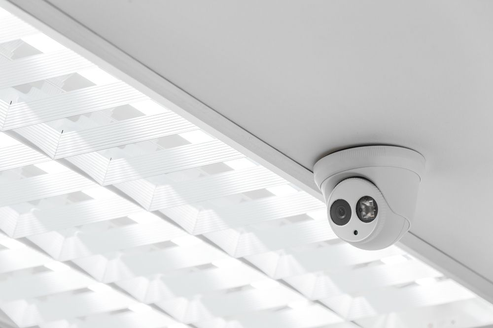
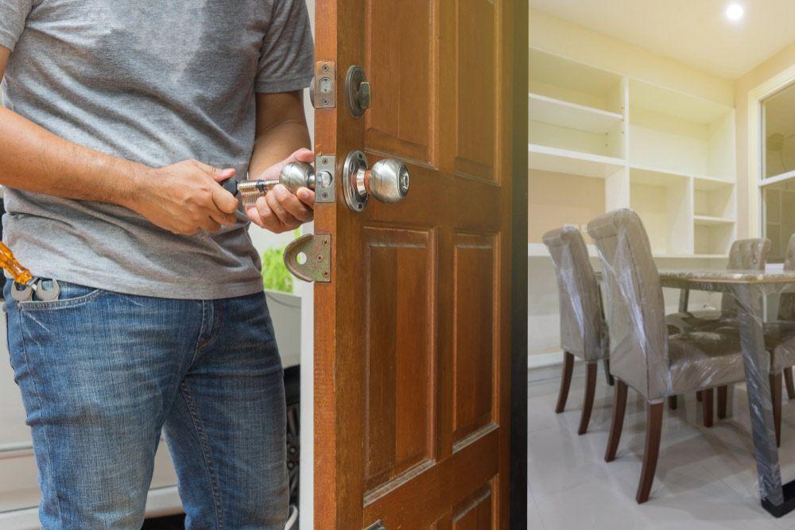

Get A Free Quote Now!
Thank you for contacting SPL Security Solutions.
We will be in touch soon.

Tailored Security for Homes, Vehicles & Businesses
At SPL Security Solutions, we understand the importance of maintaining the safety and security of your property. Our comprehensive range of locksmith services includes key cutting, restricted key systems, high-security locks and access control solutions tailored to meet individual needs.
Whether you manage a high-rise building and require a master key system to prevent unauthorised access, a retail space that needs protection against theft, or you're a homeowner who simply wants to feel secure at night, our team has the expertise and technology to provide unbeatable solutions. With our commitment to professionalism and reliability, we aim to keep our Coolangatta community safe and secure.
For more information on our comprehensive range of locksmith services, call us on (07) 5588 8111 today.
Coolangatta's residents always have access to our residential locksmith services, where we offer everything from lock installations and repairs to rekeying for improved security. Our key duplication service provides necessary backup, while our emergency lockout assistance ensures you're never locked out for long.
Our commercial locksmith services provide custom security solutions for Coolangatta businesses. From installing advanced high-security locks to implementing comprehensive master key systems and access control solutions, we're dedicated to ensuring only authorised staff can access sensitive areas. Our rapid response emergency assistance is also available around the clock.
Coolangatta drivers can rely on our automotive locksmith services for fast and professional assistance when locked out of their car or facing key-related issues. Our team offers key replacement, duplication and transponder programming services, along with ignition repair or replacement to get your car started smoothly. We also provide 24/7 emergency assistance for urgent situations.
Coolangatta clients can benefit from our restricted key systems, which offer unparalleled security by ensuring keys cannot be duplicated by unauthorised personnel. This system allows for the creation of a secure environment, controlling access and protecting against unauthorised entry. Tailored to meet each client's specific needs, our solutions provide peace of mind and enhanced security.
In Coolangatta, our range of safes are designed to cater to a variety of security needs, offering exceptional protection for your personal valuables, cash and important documents. We provide a seamless service from selection and installation to repair and emergency unlocking, ensuring your items are safeguarded against theft, damage and the elements.
We provide integrated security systems In Coolangatta that offer state-of-the-art surveillance and security technology. These systems are designed to give homeowners and businesses protection with features like advanced CCTV cameras, reliable alarm systems, sophisticated access control and user friendly intercoms. Our team can help you choose the right combination of products to meet your security needs and budget.
Secure your property in Coolangatta with our wide range of lock hardware, including heavy-duty mechanical locks and innovative digital locks. These options are tailored for maximum safety and ease of use.
In Coolangatta, we offer a range of door hardware, including durable hinges, ergonomic handles and advanced closers. These products provide reliable security while adding a modern touch.
We provide durable fire door hardware, efficient closers, and stylish handles, offering functional and aesthetic solutions for contemporary and classic spaces in Coolangatta.
24/7 Emergency Locksmith Services
Emergencies can happen at any time. For your benefit, our team at SPL Security Solutions is here to help Coolangatta residents when they need it most. Our 24/7 emergency locksmith services cover lockouts, broken locks and other urgent situations. We understand the importance of keeping your property secure, which is why we offer rapid response times and professional solutions.
In the case of a break-in, our team can assess the damage to your property and provide necessary lock repairs or replacements on the spot. Our mobile vans are equipped with the latest technology and tools to provide key cutting, rekeying services and more right then and there.

Contact Details
24/7 Emergency Locksmiths or Security Tech


Trading Hours
Retail Shop

Frequently Asked Questions
-
What should I do if my key breaks inside the lock?
Avoid trying to extract the broken piece yourself with force, as this may push it deeper or damage the lock. A locksmith has the tools and expertise to remove the broken key without harming the lock mechanism and can make a new key if needed.
-
Are there any benefits to using keyless entry for my home?
Keyless entry systems offer several benefits including eliminating the risk of losing your keys, the ability to grant temporary access to visitors and increased control over who enters your home. Many systems also feature audit trails, allowing you to monitor entry and exit times.
Locksmith & Security Solutions Gold Coast, Brisbane & Northern NSW